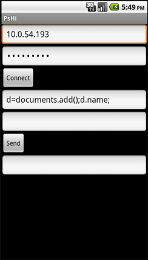
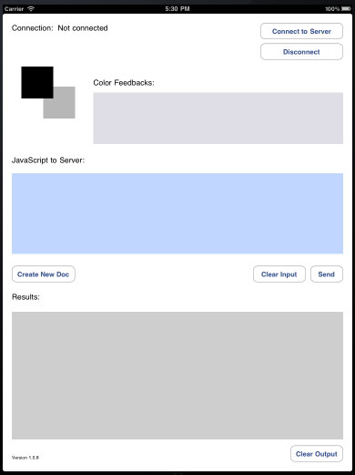
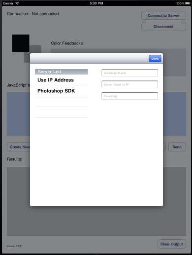
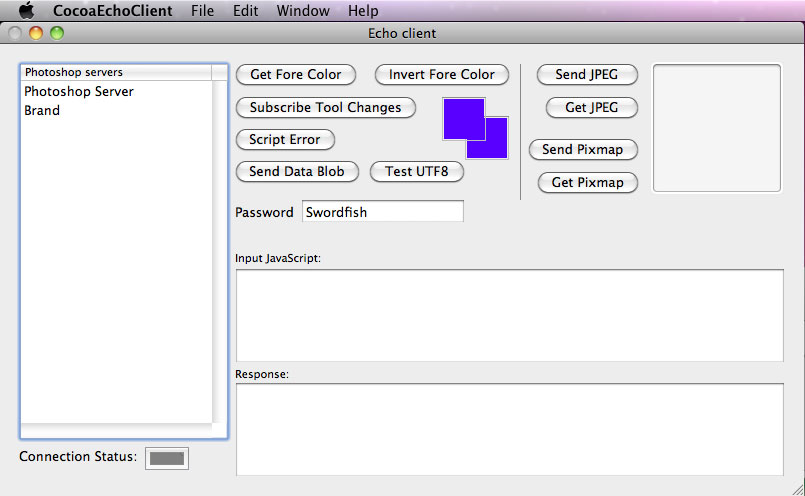

Hello World
The Hello World tutorial covers the first project for any computer programmer, saying "Hello World." You will first use Xcode or Eclipse to create an client application with an input and output text edit field. Then you will install this application on the device and verify communication with Photoshop. You can then pass JavaScript to Photoshop and check the return result from Photoshop.
Example Types
- Java Version: See the sample in samples/java
- Google Android Version: See the sample in samples/android/photoshophello
- Apple iOS Version: See the sample in samples/ios/photoshophello
- Macintosh Application Version: See the sample in samples/mac/networkclientprototype
Java Version
The Java version is found in the samples/java folder. The Java version is a command line interface that allows you to send JavaScript to the server and display the result string. If you typed in "2+2" for example the resulting string would be "4".
A Java SDK is required to compile the example Java files into byte code for the Java runtime.
Open up a command prompt by using a DOS shell on Windows or the terminal application on Macintosh. Navigate to the samples/java folder and type "javac *.java" to compile all the Java files found in this folder.
Run the Java example by typing in "java PhotoshopCommandLine 10.0.54.160 Swordfish". 10.0.54.160 will be your machine IP address and Swordfish will be your password. The IP address and password are what you used when configuring the the Remote Connections dialog box from Photoshop. If configured correctly, you will get a connection message. The application is now ready to accept JavaScript commands. Type "q" to stop the application.
The Java version creates the Socket, text buffers, encryption and a PhotoshopProtocol class from the input parameters:
Socket photoshopSocket = new Socket(args[0], 49494);
DataOutputStream outputStream = new DataOutputStream(photoshopSocket.getOutputStream());
DataInputStream inputStream = new DataInputStream(photoshopSocket.getInputStream());
PhotoshopProtocol photoshopProtocol = new PhotoshopProtocol(args[1]);
BufferedReader bufferedReader = new BufferedReader(new InputStreamReader(System.in, "UTF-8"));
The PhotoshopProtocol class shows the details on creating the message with encryption, receiving the result and decrypting the message. See PhotoshopProtocol.java for the details.
Google Android Version
The Android Photoshop Hello version can be found in: samples/android/photoshophello
This version is the Java Version with a user interface. Input your IP address and password into the first two boxes. Click the Connect button. Click the Send button. A new document will be created in Photoshop and the box above the Send button will display the name of this new document.
Import the PhotoshopHello example application into Eclipse for the details.
Apple iOS

The goal of the Hello World iPad app is to establish a TCP connection with Photoshop and to send and receive JavaScript messages between Photoshop and the client app.
There are two ways to create a connection:
1. Through Bonjour (the Apple-preferred way)
2. With an IP address
Bonjour Service
You can obtain a list of broadcasting servers with NSNetServiceBrowser as follows:
NSNetServiceBrowser *myServiceBrowser;
in your viewDidLoad() method, start the service:
myServiceBrowser = [[NetServiceBrowser alloc] init]; // init
[myServiceBrowser selfDelegate:self]; // you need to be a delegate
[myServiceBrowser searchForServicesOfType:@"_photoshopserver._tcp." inDomain:@""];
Depending on how you want to present the list, you can track the list via NSMutableArray. You also need to implement didFindService and didRemoveService.
Once you obtained the desired Bonjour service object (NSNetService), bind the object to NSInputStream and NSOutputStream (note that mySelectedNetService is an NSNetService obtained from service browser):
[mySelectedNetService getInputStream:&inputStream outputStream:&outputStream];
IP Address bind
With the IP address, use CFStreamCreatePairWithSocketToHost() to bind the service (note that kCFAllocatorDefault is defined by Apple):
NSString *ipName = "1.2.3.4"; // the ip as NSString
CFReadStreamRef readStream; // temp ReadStreamRef holder
CFWriteStreamRef writeStream; // temp WriteStreamRef holder
CFStreamCreatePairWithSocketToHost(kCFAllocatorDefault, (CFStringRef)ipName , 49494, &readStream, &writeStream);
inputStream = (NSInputStream *) readStream; // cast it as NSInputStream or NSOutputStream
outputStream = (NSOutputStream *) writeStream;
After this, you can open the stream for input and output.
Subscription
One of the things this app demonstrates is subscription. Upon connection, it subscribes to foreground and background color change. When the foreground or background color changes, Photoshop sends a notification message to the app as a 6-character hex color. The color will be represented as RR GG BB (red green blue). The code below is the JavaScript that gets sent to Photoshop for a foreground color change subscription. You need to wrap that in an NSString.
var idNS = stringIDToTypeID( "networkEventSubscribe" );
var desc1 = new ActionDescriptor();
desc1.putClass( stringIDToTypeID( "eventIDAttr" ), stringIDToTypeID( "foregroundColorChanged" ) );
executeAction( idNS, desc1, DialogModes.NO );
Please see the How Does It Work? section for more information.
Macintosh Application Version

Not every app needs to be on a Touch device. The Macintosh Application Cersion shows that any application can connect to Photoshop through encrypted TCP messages. This Mac Application demonstrates all protocol abilities such as JavaScript sending, image sending/receiving and arbitrary data type sending. This is also a great debugging app that helps double-check to see if the protocol is working as expected. The project lives in samples/mac/networkclientprototype.